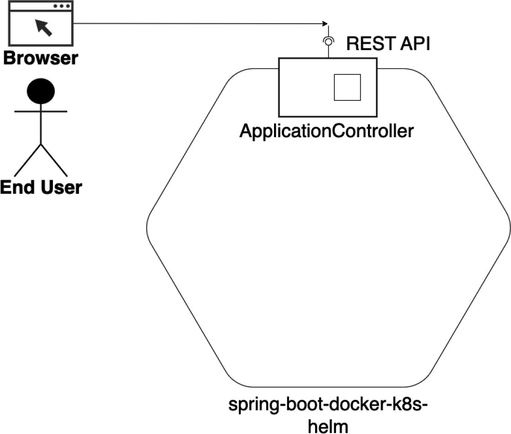
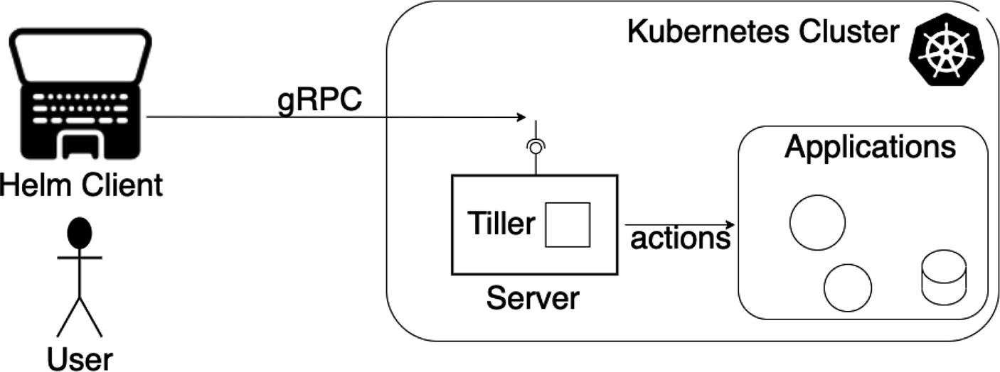
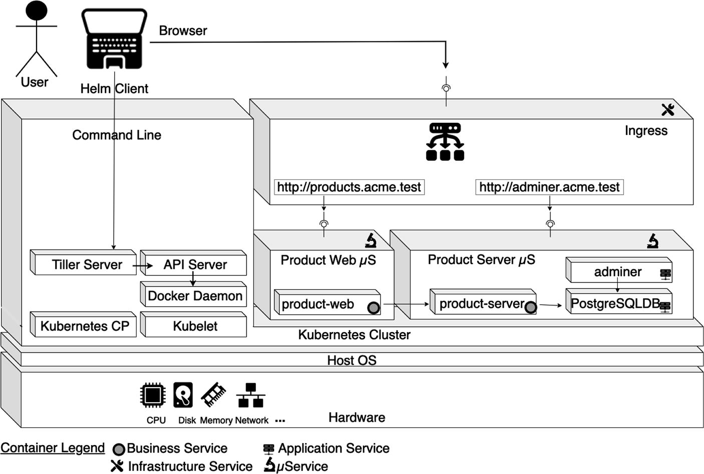

NBCRA 45, Christbin, Thiruvananthapuram, Kerala, India
The journey from monoliths to microservices includes objectives like selective scalability, parallel release, and so on. However, as you create more microservices and your application grows, it becomes increasingly difficult to manage. Kubernetes simplifies the process by grouping multiple microservices into a single deployment. Managing Kubernetes applications across the development lifecycle brings its own set of challenges, including version management, configuring environment variables, resource allocation, updating, and rollbacks. Helm provides one of the most appropriate solutions to this problem, making deployments more consistent, repeatable, and reliable. This chapter looks again at the need for automation and as a part of that it introduces Helm with the help of the multi-microservices example.
The objective here is to understand the automation steps and then introduce Helm. To start, I strip down the example application to a bare minimum so that you can concentrate just on the application automation aspects. Once I introduce Helm, I bring back the same multi-microservices example and show you how Helm makes sense when the microservices complexity increases.
The following concepts are covered in this chapter:
Reintroducing the Hello World Spring Boot microservices
Automating Docker interactions
Automating Kubernetes interactions
Introducing Helm
Using Helm to deploy a multi-microservice
Using Helmfile to deploy a multi-microservice
Let’s start by reintroducing the “Hello World” microservice example.
Introducing a Simple Java Microservice
You saw one simple microservice example in Chapter 1. This section uses a similar, but even simpler, microservice to start with.
Designing Your Simple Microservices
This simple microservice has a single component or Java class, which is a REST controller (see Figure 12-1).

A diagram illustrates the simple microservice. It includes browser, rest A P I, application controller, and end user.
Figure 12-1
A simple microservice
Let’s investigate the project structure as well.
Code Organization
The source code for this book is available on GitHub via the book’s product page, located at www.apress.com/9798868805547. The source code for this example is organized as shown in Listing 12-1, inside the ch12\ch12-01 folder.
./ch12-01/
├── README.txt
├── clean.sh
├── make.sh
├── pom.xml
├── run.sh
└── src
└── main
├── java
│ └── com
│ └── acme
│ └── ecom
│ └── product
│ └── Application.java
└── resources
├── application.yml
└── log4j2-spring.xml
Listing 12-1
Spring Boot Microservices Source Code Organization
This code follows the standard Maven structure so that the pom.xml file is in the root directory.
Understanding the Source Code
The single application component is the Application.java class, which is a REST controller (see Listing 12-2).
In the next three examples, you will increase the automation level of build and packaging for container-based deployment for this microservice. After that, I introduce Helm.
Automating the Docker Build
In this section, you containerize the example and deploy it in Docker. This section uses dockerfile-maven-plugin to integrate Maven with Docker.
Understanding the Source Code
The source code for this book is available on GitHub via the book’s product page, located at www.apress.com/9798868805547. The source code for this example is organized inside the ch12\ch12-02 folder.
You have the single application component, the Application.java class, which is a REST controller. The additional code tells the Maven script to use the dockerfile-maven-plugin. See Listing 12-6.
</project>
...
<build>
<plugins>
...
<plugin>
<groupId>com.spotify</groupId>
<artifactId>
dockerfile-maven-plugin
</artifactId>
<version>1.4.13</version>
<configuration>
<repository>
${docker.image.prefix}/
${project.artifactId}
</repository>
</configuration>
</plugin>
</plugins>
</build>
</project>
Listing 12-6
Spotify Maven Plugin (ch12/ch12-02/pom.xml)
The Spotify Maven plugin runs the Docker command for you using your Dockerfile, as if you were doing it on the command terminal. You can use it to automate the Docker build. There are a few configuration options for the Docker image tag, and so on, but it keeps the Docker knowledge in your application concentrated in a Dockerfile, which many people prefer.
Build and Run the Microservice
The ch12\ch12-02 folder contains the Maven scripts required to build and run the examples.
Since you need a Docker runtime, first bring Minikube up. Refer to Appendix E for a quick reference to the Minikube-based Kubernetes setup and commands. See Listing 12-7.
This log states that binildas/spring-boot-docker-k8s-helm:latest has been built. You can inspect the local Docker registry to view the newly created image, as shown in Listing 12-9.
In this example, whatever automation you intended (image creation alone) has already been completed, so you can do the rest of the stages manually.
Now push the image to the Docker public registry. Since my Docker registry already has that image, I first delete it from the terminal. For that, I will get a token. See Listing 12-10.
(base) binildass-MacBook-Pro:~ binil$ docker ps -a
CONTAINER ID IMAGE COMMAND CREATED STATUS PORTS NAMES
f39c79e72b6f binildas/spring-boot-docker-k8s-helm:latest "java -cp app:app/li..." 18 minutes ago Up 18 minutes 0.0.0.0:8080->8080/tcp sad_chandrasekhar
...
(base) binildass-MacBook-Pro:~ binil$ eval $
Listing 12-17
Listing the Running Containers
The next three examples increase the automation level of build and packaging.
Automating Docker Push
This example shows how to automate the Docker push of images too, which is one step more than the previous example.
The example uses Google’s jib-maven-plugin to integrate Maven with Docker.
Understanding the Source Code
The source code for this book is available on GitHub via the book’s product page, located at www.apress.com/9798868805547. The source code for this example is organized inside the ch12\ch12-03 folder.
The single application component is the Application.java class, which is a REST controller. You have already seen this level of automation in the second example in Chapter 7, but you will do this in the current example too for the sake of completeness. Also, you are doing more configurations to the jib plugin, so the Maven configurations are shown in Listing 12-18.
<project>
...
<build>
<plugins>
<plugin>
<groupId>org.springframework.boot</groupId>
<artifactId>
spring-boot-maven-plugin
</artifactId>
</plugin>
<plugin>
<groupId>com.google.cloud.tools</groupId>
<artifactId>
jib-maven-plugin
</artifactId>
<version>3.3.2</version>
<configuration>
<to>
<image>
binildas/${project.artifactId}
</image>
</to>
<container>
<creationTime>
USE_CURRENT_TIMESTAMP
</creationTime>
<ports>
<port>8080</port>
</ports>
</container>
</configuration>
</plugin>
</plugins>
</build>
</project>
Listing 12-18
Maven pom xml (ch12/ch12-03/pom.xml)
Refer to the second example in Chapter 7, where it explains how to configure the Maven settings configuration file, and so on, for the Docker Hub credential setting in Listing 7-22. This chapter goes straight to building and pushing the image.
Build and Run the Microservice
The ch12\ch12-03 folder contains the Maven scripts required to build and run the examples. The mvn clean compile jib:build command is used to build the example, as shown in Listing 12-19.
Building the Microservice and Pushing the Docker Image
You can run the microservice as the next step. Use the docker run -it -p 8080:8080 binildas/spring-boot-docker-k8s-helm:latest command to run this example, as shown in Listing 12-20.
2023-05-20 07:46:08 INFO Application.home:43 - Returning...
...
Listing 12-20
Running the Microservice Using Scripts
Once the application is running, you are ready to test the application.
Testing the Microservice
You need to find the Minikube IP first, as shown in Listing 12-6. Once the microservice is up, you can access the web application using your browser and pointing to this URL:
http://192.168.64.6:8080/
You can alternatively use cURL to access the microservice, as shown in Listing 12-5.
Automating Kubernetes Deployment
Having seen the different build automations for Docker, you automate the Kubernetes deployment in this example. In fact, you have been using automation for Kubernetes deployment in many of the examples in the previous chapters, especially in Chapters 10 and 11. Therefore, I do not explain every detail again; instead just explaining how to build and run the code. The Spotify Maven plugin is used for the automation, the details of which you learned in the second example in this chapter.
Code Organization
The source code for this book is available on GitHub via the book’s product page, located at www.apress.com/9798868805547. The source code for this example is organized as shown in Listing 12-21, inside the ch12\ch12-04 folder.
./ch12-04/
├── Dockerfile
├── README.txt
├── clean.sh
├── k8s
│ ├── deployment.yml
│ └── service.yml
├── make.sh
├── pom.xml
├── run.sh
└── src
└── main
├── java
│ └── com
│ └── acme
│ └── ecom
│ └── product
│ └── Application.java
└── resources
├── application.yml
└── log4j2-spring.xml
Listing 12-21
Spring Boot Microservices Source Code Organization
This follows the standard Maven structure so that the pom.xml file is in the root directory.
In Chapters 10 and 11, you learned about the Kubernetes deployment descriptors, so I do not explain them here. Instead, you’ll build and run the example.
Build and Run the Microservice
The ch12\ch12-04 folder contains the Maven scripts required to build and run these examples. The mvn clean package dockerfile:build command is used to build the example, as shown in Listing 12-22.
(base) binildass-MacBook-Pro:ch12-04 binil$ sh run.sh
deployment.apps/springboothelm created
service/springboothelm created
http://192.168.64.6:30048
...
Listing 12-24
Running the Microservice Containers Using Scripts
Once the services are up and running, you can test the example.
Testing the Microservice
You need to find the Minikube IP first, as shown in Listing 12-16. You can then access the web application by using your browser and pointing to this URL:
http://192.168.64.6:8080/
You can alternatively use cURL to access the microservice, as shown in Listing 12-5.
Helm
In the previous example and in many other examples in the previous two chapters, you saw YAML files used for Kubernetes deployments. When the number of microservices increases and when the number of deployment environments increases, you have to deal with many YAML files. For example, my current organization sells SaaS services for airline passenger reservation services and airline cargo reservation services, along with other services. We need to have a core product that can operate at Level 4 SaaS maturity, which means the same instance should functionally adapt to the requirements of multiple airlines (called tenants). At the same time, these products need to be deployed in multiple environments, like Development, Testing, Staging, and so on. Helm is a handy tool that maintains a single deployment YAML file with version information. This file lets you set up and manage a very large Kubernetes cluster with a few commands.
What Is Helm?
Helm is a package manager for Kubernetes. It helps in installing, upgrading, uninstalling, and rolling back workloads in a Kubernetes cluster. Like yum and apt, which are popular package managers for Linux distributions, Helm treats the deployments as applications being installed on a Kubernetes platform.
Helm needs you to store your Kubernetes manifest files in a specific folder structure. This folder structure is treated as one package. Helm packages are called charts. Helm charts can be nested to help install multiple applications using a single hierarchical folder structure. For convenience in managing the chart as well as several versions of the same Helm chart, these folders can also be archived and stored in a repository.
Helm Nomenclature
Helm uses three main concepts that you need to be familiar with:
Chart: As explained, a chart contains all that is required for a Kubernetes deployment along with a few Helm-specific files in a certain folder structure. This includes all the YAML configuration files for deployments, services, secrets, and config maps that define the deployed state of your application.
Config: This includes one or more YAML files that have the required configuration information for deploying a Kubernetes application. Resources in the Kubernetes cluster are deployed based on these values.
Release: A running instance of a chart is called a release. When you run the helm install command, it pulls the config, merges with the chart files, and deploys all the Kubernetes resources. One chart can have multiple releases.
With these basic constructs under your belt, the next section looks at the Helm architecture.
Client-Server Helm Architecture
Helm Kubernetes has two main components—the client (CLI) and the server (Tiller). Helm works on a client-server model, as shown in Figure 12-2.

A helm architecture has the following components. User. Helm client. Kubernetes Cluster.
Figure 12-2
Helm architecture
This section investigates the two main components of the Helm architecture:
Tiller: Tiller is a server installed in the Kubernetes cluster and Helm manages Kubernetes applications through this component. Tiller interacts with the Kubernetes API server for application release operations—install, upgrade, query, and remove Kubernetes resources. For quick development purposes, it can also be run locally and configured to talk to a remote Kubernetes cluster.
Client (CLI): Similar to any client-server model, the Helm client lives on the local workstation of the user and the Tiller server on the Kubernetes cluster to execute what is needed. You can think of CLI as used to push the resources you need. Tiller runs inside the Kubernetes cluster and manages (creating/updating/deleting) the resources of the Helm charts.
Note Subsequent to Helm 2 (Helm v2.16.7), the Tiller server is deprecated. However, that does not affect the examples in this book.
With this background, the next section explains how Helm works.
How Helm Works
To understand this concept, recall the first example in Chapter 11. In the Product Server microservice, you defined three replicas for the server instance, as shown in Listing 12-25.
apiVersion: apps/v1
kind: Deployment
metadata:
name: product-server
...
spec:
replicas: 3
...
template:
...
spec:
containers:
- name: product-server
...
env:
- name: DB_SERVER
value: postgres
- name: spring.kafka.bootstrap-servers
value: kafka-1-ip-service:9092
Listing 12-25
The Product Server Pod YAML File (ch11\ch11-01\product-server-deployment.yml)
Suppose that you need only one instance in staging. To do this, you need to update the replica value in the descriptor and deploy it in Kubernetes. A better approach is to use Helm so you can parameterize the fields depending on the environment. In this example, instead of using a static value for replicas, you can use the value for these fields from another file. This file is called values.yaml. In this manner, Helm helps you separate the configurable field value from the actual YAML descriptors.
In the next section, you’ll learn more by doing.
Helm Package Microservice
This section shows you how to Helm-enable the previous example in this chapter. As mentioned in Appendix E, I assume that you have installed Helm on your machine.
Code Organization
The source code for this book is available on GitHub via the book’s product page, located at www.apress.com/9798868805547. The source code for the example is organized as shown in Listing 12-25, inside the ch12\ch12-05 folder. This follows the standard Maven structure so that the pom.xml file is in the root directory. This also contains a new folder called springboothelm, with many files inside it, as shown in Listing 12-26.
./ch12-05/
├── README.txt
├── clean.sh
├── make.sh
├── pom.xml
├── springboothelm
│ ├── Chart.yaml
│ ├── charts
│ ├── templates
│ │ ├── NOTES.txt
│ │ ├── _helpers.tpl
│ │ ├── deployment.yaml
│ │ ├── ingress.yaml
│ │ ├── service.yaml
│ │ ├── serviceaccount.yaml
│ │ └── tests
│ │ └── test-connection.yaml
│ └── values.yaml
└── src
└── main
├── java
│ └── com
│ └── acme
│ └── ecom
│ └── product
│ └── Application.java
└── resources
├── application.yml
└── log4j2-spring.xml
Listing 12-26
Spring Boot Microservices Source Code Organization
Don’t panic; you don’t need to hand-create all these files. Instead, you can auto-generate many of them.
Creating Your First Helm Chart
Before you start creating your first Helm chart, make sure Minikube is running as mentioned in Listing 12-7, since you need to have a Kubernetes cluster.
Next, from the source code downloaded for this example (ch12\ch12-05), delete the springboothelm folder. Then, from the root of the project folder, create your first Helm chart. See Listing 12-27.
(base) binildass-MacBook-Pro:ch12-05 binil$ tree ./springboothelm/
./springboothelm/
├── Chart.yaml
├── charts
├── templates
│ ├── NOTES.txt
│ ├── _helpers.tpl
│ ├── deployment.yaml
│ ├── hpa.yaml
│ ├── ingress.yaml
│ ├── service.yaml
│ ├── serviceaccount.yaml
│ └── tests
│ └── test-connection.yaml
└── values.yaml
3 directories, 10 files
(base) binildass-MacBook-Pro:ch12-05 binil$
Listing 12-27
Creating Your First Helm Chart
Let’s look at Chart.yaml first. This file contains all the metadata about the Helm chart example. See Listing 12-28.
apiVersion: v2
name: springboothelm
description: A Helm chart for Kubernetes
type: application
version: 0.1.0
appVersion: "1.16.0"
Listing 12-28
The Chart YAML File (ch12/ch12-05/springboothelm\Chart.yaml)
The apiVersion, name, and version fields are mandatory. There are no strict rules for the apiVersion. Each chart should have its own version number and it should follow the Semantic Versioning 2.0.
# Declare variables to be passed into your templates.
replicaCount: 1
image:
repository: binildas/spring-boot-docker-k8s-helm
pullPolicy: IfNotPresent
imagePullSecrets: []
nameOverride: ""
fullnameOverride: ""
...
Listing 12-29
The Values YAML File (ch12/ch12-05/springboothelm/values.yaml)
This file is quite verbose, but luckily you don’t need to manage all its contents. For the purposes here, you just need to update two lines:
repository: binildas/spring-boot-docker-k8s-helm
port: 8080
The next configuration you need to update is deployment.yaml. As the name suggests, it is used for deployment purposes. Listing 12-30 shows the deployment.yamlfile.
apiVersion: apps/v1
kind: Deployment
metadata:
name: {{ include "springboothelm.fullname" . }}
labels:
{{- include "springboothelm.labels" . | nindent 4 }}
spec:
replicas: {{ .Values.replicaCount }}
selector:
matchLabels:
{{- include "springboothelm.selectorLabels" . | nindent 6 }}
...
Listing 12-30
The Deployment YAML File (ch12/ch12-05/springboothelm/templates/deployment.yaml)
This file is also quite verbose, but luckily you don’t need to manage all its contents either. For the purposes here, you just need to update one line:
containerPort: 8080
You need to do this because you need to deploy the Spring Boot application on port 8080.
The service.yamlfile is used to expose the Kubernetes springboothelm deployment as service. You don’t need to make any changes to the service.yaml file.
Confirming Helm Chart Accuracy
You are almost ready with your first Helm chart for your Spring Boot application. It’s smart to check the service.yaml and deployment.yaml files to confirm everything looks fine. For that, you should get out from the springboothelm directory (on the project root folder), and then execute the command in Listing 12-31.
Running this command will return the service.yaml, deployment.yaml, and test-connection.yaml files with actual values so that you can verify whether all is right.
As an optional step, there is one more sanitary command provided by Helm, called lint, which you can use to identify possible issues in advance. See Listing 12-32.
If there is something wrong with your Helm chart configuration, this check will prompt you about it immediately.
Build and Run the Microservice
The ch12\ch12-05 folder contains the Maven scripts required to build and run the examples. First, you need to build the microservices and push the image to the public Docker Hub. You do this using the mvn clean compile jib:buildcommand, as shown in Listing 12-34.
You can then verify that the rollback was successful by using the code in Listing 12-43.
(base) binildass-MacBook-Pro:ch12-05 binil$ helm list -a
NAME NAMESPACE REVISION UPDATED STATUS CHART APP VERSION
myfirstspringboot default 3 2023-05-29 23:42:25.252089 +0530 IST deployed springboothelm-0.1.0 latest
(base) binildass-MacBook-Pro:ch12-05 binil$
Listing 12-43
Verify the Helm Installation
As you can see, you have successfully rolled back the release to the previous version. One interesting thing about Helm is that it still updates the REVISION to the next sequence, 3. See Listing 12-44.
(base) binildass-MacBook-Pro:~ binil$ kubectl get all
I hope you enjoyed your first Helming exercise. In the next section, you will Helm-release the multi-microservice example.
Helm-Packaging Multi-Microservices
You learned how Helm can enable the packaging and deployment of microservices in Kubernetes in the previous sections. However, that example is not complex enough to enable you to appreciate the true benefits of Helm. This section shows you how to use Helm to package and deploy your multi-microservices projects.
Designing Helm-Based Deployment Topology
This example follows the deployment topology from Figure 11-3 in Chapter 11. The Product Web and Product Server microservices are containerized, and the Product Server microservice will connect to a PostgreSQL database, again deployed within a container. All these containers will now be inside Kubernetes. Ingress is an additional component for routing and an Adminer UI component manages the PostgreSQL DB. See Figure 12-3.

A diagram illustrates the deployment topology. It includes user, browser, helm client, Kubernetes cluster, host O S, and hardware.
Figure 12-3
Deployment topology for microservices
The next sections look at the code for this deployment.
Code Organization
The source code for this book is available on GitHub via the book’s product page, located at www.apress.com/9798868805547. The source code for this example is organized inside the ch12\ch12-06 folder.
Before you get into the source code for this example, take another look at the source code organization of the similar example (ch11\ch11-03) from Listing 11-32 in Chapter 11. It’s shown again in Listing 12-48.
./ch11-03/
├── 01-ProductServer
│ ├── make.sh
│ ├── pom.xml
│ └── src
│ └── main
├── 02-ProductWeb
│ ├── make.sh
│ ├── pom.xml
│ └── src
│ └── main
├── Dockerfile
├── README.txt
├── adminer-deployment.yaml
├── adminer-svc.yaml
├── clean.sh
├── ingress-controller.yaml
├── makeandrun.sh
├── pom.xml
├── postgres-config.yml
├── postgres-deployment.yml
├── postgres-pvc.yml
├── postgres-svc.yml
├── product-server-deployment.yml
├── product-server-service.yml
├── product-web-deployment.yml
└── product-web-service.yml
Listing 12-48
Example 11-03 Source Code Organization
For two business services, you can see how many YAML files are required. A little consolidation can be done, say by merging the deployment and service definitions of Product Server microservice into a single YAML file, and so on. But it still doesn’t fix another problem, the problem of duplication. How do you avoid copy-pasting major file content just to replace a couple of values? It would be nice if there was a way to define a template for both business objects (the Product Server and Product Web microservices) and then inject values into specific fields. Helm can help you in this regard.
The source code for this example is organized as shown in Listing 12-49, inside the ch12\ch12-06 folder. This is the same example you saw in Chapter 11. You will now use Helm for deployment.
./ch12-06/
├── 01-ProductServer
│ ├── Dockerfile
│ ├── pom.xml
│ └── src
│ └── ...
├── 02-ProductWeb
│ ├── Dockerfile
│ ├── pom.xml
│ └── src
│ └── ...
├── Dockerfile
├── README.txt
├── acme-postgres.yaml
├── acme-product-server.yaml
├── acme-product-web.yaml
├── adminer.yaml
├── app
│ ├── Chart.yaml
│ ├── charts
│ ├── templates
│ │ ├── deployment.yaml
│ │ └── service.yaml
│ └── values.yaml
├── clean.sh
├── ingress
│ ├── Chart.lock
│ ├── Chart.yaml
│ ├── charts
│ │ └── nginx-ingress-1.36.0.tgz
│ ├── templates
│ │ └── ingress.yaml
│ └── values.yaml
├── ingress.yaml
├── make.sh
├── pom.xml
├── postgres
│ ├── Chart.yaml
│ ├── charts
│ ├── templates
│ │ ├── config.yaml
│ │ ├── deployment.yaml
│ │ ├── pcv.yaml
│ │ └── service.yaml
│ └── values.yaml
└── run.sh
Listing 12-49
Example 12-06 Source Code Organization
You can see that the number of YAML configuration files at the top level of the project root folder has been reduced. There are more subfolders and many new files inside them, but I promise, it’s not going to be too bad.
Understanding the Source Code
This section assumes that you have enabled Ingress in Minikube and added the required hostnames to your host files, as mentioned in the third example in Chapter 11.
This example starts by creating the Helm charts one by one. In the process, you also see how charts common for more than one component can be useful. I assume that you have a project root folder called ch12/ch12-06, which currently has only the README.txt file in it. Rather, copy the chapter code from the book’s source code download and delete any files and folders not mentioned explicitly right now. Of course, after creating the charts, copy any other files required from the book’s code to your project root.
Helm Chart for PostgreSQL
You’ll start by creating the first chart, the chart for PostgreSQL database. See Listing 12-50.
You delete all of those files generated in the ./postgres/template folder. Then you create four new files inside the ./postgres/template folder—deployment.yaml, pcv.yaml, service.yaml, and config.yaml. You will fill these new files with the files from the book’s code.
Copy the contents from the respective files in BookCode/ch12/ch12-06/postgres/templates/* to the four files.
Listing 12-51investigates selected portions of these files.
apiVersion: apps/v1
kind: Deployment
metadata:
name: {{ .Values.postgres.name }}
labels:
app: {{ .Values.postgres.name }}
group: {{ .Values.postgres.group }}
spec:
replicas: {{ .Values.replicaCount }}
selector:
matchLabels:
app: {{ .Values.postgres.name }}
...
Listing 12-51
The Postgres Deployment YAML File (ch12/ch12-06/postgres/templates/deployment.yaml)
The Go template-based placeholders are referring to values located in the values.yamlfile. The values.yaml files should be in the root folder of the chart. To make it clear with an example, the placeholder {{ .Values.postgres.name}} in deployment.yaml will be filled with the value in Listing 12-52.
postgres:
name: postgres
Now Copy contents from BookCode/ch12/ch12-06/postgres/values.yaml to the file in your project folder ./postgres/values.yaml
Listing 12-51. The postgres values YAML file (ch12/ch12-06/postgres/values.yaml)
replicaCount: 1
postgres:
name: postgres
group: db
container:
image: postgres:9.6-alpine
port: 5432
service:
type: ClusterIP
port: 5432
volume:
name: postgres-storage
kind: PersistentVolumeClaim
mountPath: /var/lib/postgresql/data
pvc:
name: postgres-persistent-volume-claim
accessMode: ReadWriteOnce
storage: 4Gi
config:
name: postgres-config
data:
- key: key
value: value
Listing 12-52
The Postgres Values YAML File (ch12/ch12-06/postgre/values.yaml)
Let’s now investigate one more file in detail, and the rest of the files will follow the same pattern. The next file to investigate is the template that you need to create for ClusterIP, which is required to allow other pods inside the cluster to access the pod with postgres. This is the ./postgres/template/service.yaml file, as shown in Listing 12-53.
apiVersion: v1
kind: Service
metadata:
name: {{ .Values.postgres.name }}
labels:
group: {{ .Values.postgres.group }}
spec:
type: {{ .Values.postgres.service.type }}
selector:
app: {{ .Values.postgres.name }}
ports:
- port: {{ .Values.postgres.service.port }}
targetPort: {{ .Values.postgres.container.port }}
Listing 12-53
The Postgres Service YAML File (ch12/ch12-06/postgres/service.yaml)
Here again, if you take {{ .Values.postgres.service.port }} for example, its value will come from the leaf of the ./postgres/values.yaml file:
postgres:
service:
port: 5432
The same explanation applies to the ./postgres/pvc.yaml and ./postgres/config.yaml files.
You can update the metadata in the ./Chart.yaml file, which was described in the previous example in this chapter. If you are in doubt, just copy the contents from BookCode/ch12/ch12-06/Chart.yaml to the file in your project folder: ./Chart.yaml
As a final step for the postgres chart, you need to create another file that will hold some Postgres-specific values. Add the file outside the postgres chart folder.
This section demonstrates another advantage of Helm—using common charts, called template charts—which can be used for more than one release. In this case, you will use it as a common template for the Product Web and Product Server microservices and the Adminer app. You need to create a new Helm chart called app and repeat the steps for creating the postgres Helm chart, as shown in Listing 12-55.
Copy the contents from the corresponding files BookCode/ch12/ch12-06/acme-*.yaml to ./acme-*.yaml.
Copy the contents from the corresponding files BookCode/ch12/ch12-06/adminer.yaml to ./adminer.yaml.
Helm Chart for Ingress
The last chart you create is for the Ingress controller. For this, you will create a new Helm chart called ingress and repeat the steps for creating the postgres Helm chart, as shown in Listing 12-56.
Chart YAML for Ingress (ch12/ch12-06/ingress/Chart.yaml)
The - dependencies: section is newly added compared to other charts. It creates a default backend service that enables the Ingress controller’s features.
This declaration only defines what this chart depends on; it won’t download it automatically during the installation. That is why you have you to install this dependency explicitly, by running the helm dependency update ./ingress/ command. When you run this command, a new file called nginx-ingress-1.36.0.tgz will appear inside the ./ingress/charts folder.
Build and Run the Microservice
The ch12\ch12-06 folder contains the Maven scripts required to build and run these examples. First, you will build the microservices and release the application to Kubernetes. A single script called run.sh declares all the commands, as shown in Listing 12-58.
Note the URL address in Figure 12-3. Refer to the section titled “Test the Microservice Using UI” in Chapter 1 to test the Product Web microservice container.
While you test the microservices, keep watching the log windows of the pods, as mentioned in Listings 11-10 through 11-15 in Chapter 11.
If you recollect, you also configured the Adminer UI. You will now attempt to access the PostgreSQL database through the Adminer UI. Use the second URL for that:
Refer to the third example in Chapter 11 to get more details about testing.
Once you complete the testing process, you can stop and remove the microservice containers and clean the environment. For that, you have a single script, as shown in Listing 12-60.
eval $(minikube docker-env)
helm delete adminer
helm delete product-web
helm delete product-server
helm delete postgres
helm delete ingress-backend
helm delete ingress-controller
mvn -Dmaven.test.skip=true clean
docker rmi -f ecom/product-web
docker rmi -f ecom/product-server
Listing 12-60
Script for Cleaning the Project and the Environment (ch12/ch12-06/clean.sh)
You can now execute this script to clean the environment, as shown in Listing 12-61.
(base) binildass-MacBook-Pro:ch12-06 binil$ sh clean.sh
...
Listing 12-61
Cleaning the Project and the Environment
This completes the multi-microservices packaging example with Helm.
Helmfile Packaging Multi-Microservices
In the last example, you used Helm to package and deploy the multi-microservices project. There you defined a generic Helm chart (template) and reused it across multiple microservices only by injecting specific values into the template. In that example, even though you used a single script called run.sh, to install or update a chart in a cluster, you need to run a specific imperative command. In other words, to change the state of a cluster, you need to run a command that is specific for a given deployment. Helm doesn’t have the feature to install, update, or roll back all applications from an entire cluster with a single command.
Helmfile will help you here, because it allows you to declare a definition of an entire Kubernetes cluster in a single YAML file and bundle multiple Helm releases (installation of Helm charts). It releases them depending on the type of environment (develop, test, production) on which you want to deploy your applications.
Let’s deploy the example you released using Helm in the previous section, but this time using Helmfile.
Code Organization
The source code for this book is available on GitHub via the book’s product page, located at www.apress.com/9798868805547. The source code for this example is organized as shown in Listing 12-62, inside the ch12\ch12-07 folder.
./ch12-07/
├── 01-ProductServer
│ ├── Dockerfile
│ ├── pom.xml
│ └── src
│ └── ...
├── 02-ProductWeb
│ ├── Dockerfile
│ ├── pom.xml
│ └── src
│ └── ...
├── Dockerfile
├── README.txt
├── charts
│ ├── app
│ │ ├── Chart.yaml
│ │ ├── charts
│ │ ├── templates
│ │ │ ├── deployment.yaml
│ │ │ └── service.yaml
│ │ └── values.yaml
│ ├── ingress
│ │ ├── Chart.yaml
│ │ ├── charts
│ │ │ └── nginx-ingress-1.36.0.tgz
│ │ ├── templates
│ │ │ └── ingress.yaml
│ │ └── values.yaml
│ └── postgres
│ ├── Chart.yaml
│ ├── charts
│ ├── templates
│ │ ├── config.yaml
│ │ ├── deployment.yaml
│ │ ├── pcv.yaml
│ │ └── service.yaml
│ └── values.yaml
├── clean.sh
├── helmfile.yaml
├── make.sh
├── pom.xml
├── run.sh
└── values
├── acme-postgres.yaml
├── acme-product-server.yaml
├── acme-product-web.yaml
├── adminer.yaml
└── ingress.yaml
Listing 12-62
Source Code Organization for Multi-Microservice Helmfile Deployment
The next section looks at the main aspects of the source code.
Understanding the Source Code
As a prerequisite, I assume that you have enabled Ingress in Minikube and added the required hostnames to your host files, as mentioned in the third example in Chapter 11.
This example assumes that you have a project root folder called ch12/ch12-07 which is empty. First, bring all the files from ch12/ch12-06 to ch12/ch12-07. Then, create two new folders called charts and values in the project root folder: ch12/ch12-07. Move ./app, ./ingress, and ./postgres to ./charts and move ./*.yaml to ./values. Then add a new helmfile.yaml file to the root directory. See Listing 12-63.
(base) binildass-MacBook-Pro:.Trash binil$ cd /Users/binil/binil/code/mac/mybooks/docker-04/ch12/
Reorganizing the Multi-Microservice Project for Helmfile
I explain the major components in Listing 12-63 here.
helmfile.yaml: This is a configuration for a Helmfile, currently blank.
./charts: Three Helms charts that are templates for each release—app (for adminer, product-web and product-server), postgres and ingress.
./values: The folder containing values that are specific for each application that will be released.
In the last example, in ch12/ch12-06/ingress/Chart.yaml, nginx-ingress version 1.36.0 is fetched from the repository. Further, you explicitly run the installation command. In this current example, you will remove this part from ch12/ch12-07/charts/ingress/Chart.yaml and instead mention in ./helmfile.yaml to treat the nginx-ingress chart as a separate Helm release, apart from the Ingress controller configuration for routing.
You can delete the ./charts/ingress/Chart.lock file.
What you have done here is split the Ingress controller from the Ingress backend. The ./charts/ingress/Chart.yaml Helm chart defines only the Ingress controller; the Ingress backend has been moved to ./helmfile.yaml. In ./helmfile.yaml, you determine from which Helm repositories you would like to download charts and then mention all the releases.
Build and Run the Microservice
The ch12\ch12-07 folder contains the Maven scripts required to build and run these examples.
As a first step, you need to add the repository to your instance of Helm, which you do only once (you don’t need to do this, since this is included in the single script).
helmfile repos
Next, you can install all the charts with a single command:
helmfile sync
Now perform the build and release. A single script called run.sh declares all the commands, as shown in Listing 12-65.
Note the URL address in Figure 12-3. Refer to the section titled “Test the Microservice Using UI” in Chapter 1 to test the Product Web microservice container.
While you test the microservices, keep watching the log windows of the pods, as mentioned in Listings 11-10 through 11-15 in Chapter 11.
If you recollect, you also configured the Adminer UI. You will now attempt to access the PostgreSQL database through the Adminer UI. Use the second URL for that:
Refer to the third example in Chapter 11 to get more details about testing.
Once you complete the testing process, you can stop and remove the microservice containers and clean the environment, using the clean.sh script provided, which is like the script in Listing 12-60. See Listing 12-68.
(base) binildass-MacBook-Pro:ch12-07 binil$ sh clean.sh
...
Listing 12-68
Cleaning the Project and the Environment
This completes the multi-microservice example with Helmfile.
Summary
Helm simplifies the process of application development in Kubernetes by automating the distribution of your applications using a packaging format called a Helm chart. Helmfile allows you to declare a definition of an entire Kubernetes cluster in a single YAML file and bundles multiple Helm releases. These are handy tools to use while installing, managing, and updating hundreds of configurations, which is a normal process in a microservices environment. You saw examples with just enough complexity that you can appreciate their benefits. So far so good. Now isn’t it time to also investigate CI (Continuous Integration) and CD (Continuous Deployment) in the context of containers and microservices? That’s what you’ll do in the next chapter.